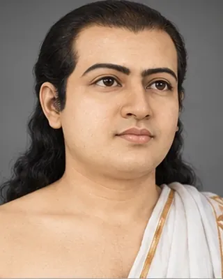

c. 1540s
শ্ৰীমন্ত শংকৰদেৱ
1449–1568 (traditional dates) · Vaishnava saint-scholar, poet and cultural reformer

Assamese saint-scholar and cultural reformer associated with Ekasarana Dharma, devotional literature, music and theatre.
Record confidence: high.